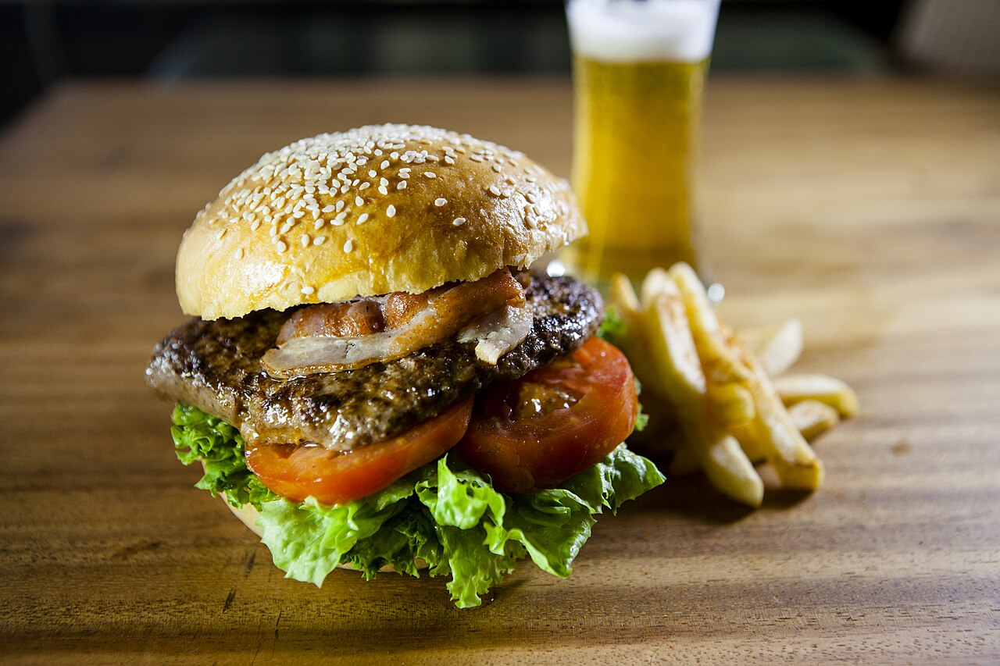

Hamburger
Home

Ingredients
- 0.7kg lean ground beef
- One finely chopped onion
- Shredded Cheddar cheese
- One egg
- One teaspoon of each: Dry onion, fresh garlic, garlic powder,
dried parsley, basil and oregano
- Soy sauce and Worcestershiresauce
- Salt and pepper
Steps
- Gather all ingredients. Preheat an outdoor grill for high heat and lightly oil the grate.
- Meanwhile, combine ground beef, onion, cheese, egg, onion soup mix, minced garlic, garlic powder, soy sauce, Worcestershire sauce, parsley, basil, oregano, rosemary, salt, and pepper in a large bowl.
- Use your hands to form the mixture into 4 patties.
- Cook patties on the preheated grill until no longer pink in the center and the juices run clear, about 4 to 5 minutes per side.
- An instant-read thermometer inserted into the center should read at least 165 degrees F (74 degrees C).